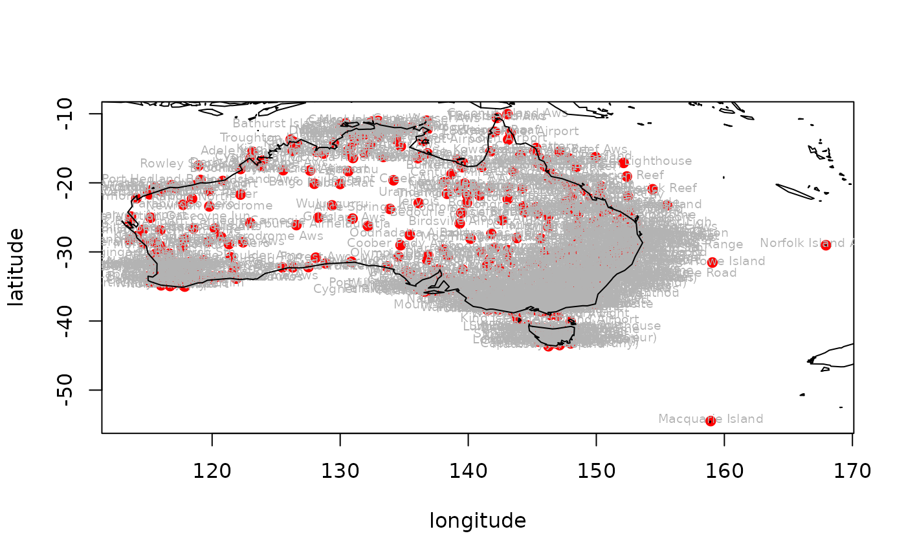

R/stations_ogimet.R
stations_ogimet.RdReturns a list of meteorological stations with their coordinates from the Ogimet webpage. The returned list is valid only for a given day
stations_ogimet(
country = "United Kingdom",
date = Sys.Date(),
add_map = FALSE,
allow_failure = TRUE
)country name; Every word must be written with capital letters (e.g. "United Kingdom")
a day when measurements were done in all available locations
logical - whether to draw a map based on downloaded dataset (requires maps package)
logical - whether to proceed or stop on failure. By default set to TRUE (i.e. don't stop on error). For debugging purposes change to FALSE
A data.frame with columns describing the synoptic stations in selected countries where each row represent a statation.
If add_map = TRUE additional map of downloaded data is visualized.
# \donttest{
stations_ogimet(country = "Australia", add_map = TRUE)

#> wmo_id station_names lon lat alt
#> 1 94000 Knuckey Lagoon 130.9500 -12.433342 32
#> 2 94002 East Point 130.8167 -12.400008 7
#> 3 94004 Ingham Aero 143.6333 -3.566678 6
#> 4 94100 Kalumburu 126.6333 -14.283339 29
#> 5 94102 Troughton Island W. A. 126.1333 -13.750015 8
#> 6 94103 Browse Island Aws 123.5333 -14.100002 4
#> 7 94105 Noonamah Airstrip 131.0333 -12.600012 18
#> 8 94106 Ngukurr Aws 134.7333 -14.716681 12
#> 9 94107 Kerang Airport 143.9334 -35.750015 77
#> 10 94108 Croker Island Airport 132.4667 -11.150003 16
#> 11 94109 Murganella Airstrip 132.9167 -11.533344 12
#> 12 94110 Oenpelli Airport 133.0000 -12.316673 9
#> 13 94112 Mount Bundey South 131.8333 -13.083335 56
#> 14 94115 Charters Towers Airport 146.2667 -20.033334 289
#> 15 94116 Dum In Mirrie Aws 130.3667 -12.633346 4
#> 16 94119 Garden Point 130.4167 -11.400008 18
#> 17 94120 Darwin Airport 130.8834 -12.416675 31
#> 18 94122 Bathurst Island Aws Cape Fourcroy 130.0167 -11.750015 7
#> 19 94125 Batchelor Aws 131.0167 -13.050001 104
#> 20 94127 Point Stuart Aws 131.8667 -12.233338 1
#> 21 94128 Douglas River 131.1833 -13.833350 43
#> 22 94130 Bradshaw 130.8000 -14.933352 75
#> 23 94131 Tindal Aws 132.3667 -14.516677 135
#> 24 94135 Mccluer Island Aws 132.9667 -11.033334 1
#> 25 94137 Jabiru Airport 132.8834 -12.650013 26
#> 26 94139 Warruwi 133.3667 -11.650013 19
#> 27 94140 Milingimbi Aws 134.8834 -12.083335 16
#> 28 94141 Central Arnhem Plateau 133.0833 -13.316673 416
#> 29 94143 Bulman Aws 134.3333 -13.666680 103
#> 30 94146 Elcho Island 135.5500 -12.016667 18
#> 31 94147 Cape Wessel Aws 136.7500 -11.000000 18
#> 32 94150 Gove Airport 136.8167 -12.266672 63
#> 33 94152 Borroloola Aws 136.3000 -16.066668 16
#> 34 94153 Groote Eylandt Airport 136.4500 -13.966686 17
#> 35 94161 Kangaroo Flats 130.8500 -12.783349 50
#> 36 94162 Mount Bundey North 131.8500 -12.900018 83
#> 37 94170 Weipa Amo 141.9167 -12.666680 19
#> 38 94171 Scherger Raaf 142.0833 -12.616679 40
#> 39 94174 Horn Island Aws 142.2833 -10.583345 5
#> 40 94181 Thursday Island 142.2167 -10.583345 1
#> 41 94182 Coconut Island Aws 143.0667 -10.050001 4
#> 42 94183 Coen Airport 143.1167 -13.750015 162
#> 43 94186 Lockhart River Airport 143.3000 -12.783349 24
#> 44 94188 Cape Flattery 145.3000 -14.966686 19
#> 45 94200 Mandora 120.8333 -19.733348 8
#> 46 94201 Cygnet Bay 123.0000 -16.450009 7
#> 47 94203 Broome Airport 122.2333 -17.933352 17
#> 48 94204 Curtin Aws 123.8167 -17.566678 91
#> 49 94206 Fitzroy Crossing Aero 125.5500 -18.166670 112
#> 50 94207 Rowley Shoals Aws 118.9334 -17.516677 8
#> 51 94210 Adele Island Aws 123.1500 -15.500010 5
#> 52 94212 Halls Creek Airport 127.6500 -18.216671 410
#> 53 94215 King Edward River 126.3000 -15.366674 400
#> 54 94216 Kununurra Kununurra Aws 128.7000 -15.766682 44
#> 55 94221 Angallary Valley 130.5667 -15.433342 60
#> 56 94222 Koolendong Valley (Defence) 130.1167 -15.183337 42
#> 57 94225 Delamere Weapons Range 131.9167 -15.733348 221
#> 58 94231 Lajamanu 130.6333 -18.316673 318
#> 59 94232 Victoria River Downs 131.0000 -16.400008 89
#> 60 94234 Daly Waters Aws 133.3667 -16.250005 210
#> 61 94238 Tennant Creek Airport 134.1667 -19.633346 377
#> 62 94239 Mcarthur River 136.0667 -16.433342 40
#> 63 94248 Centre Island 136.8167 -15.733348 12
#> 64 94254 Mornington Island Airport 139.1500 -16.650013 10
#> 65 94255 Camooweal 138.1167 -19.916685 231
#> 66 94257 Sweers Island 139.5833 -17.100002 4
#> 67 94260 Burketown Airport 139.5333 -17.733348 6
#> 68 94261 Century Mine 138.7000 -18.750015 127
#> 69 94266 Normanton Airport 141.0667 -17.683347 22
#> 70 94268 Kowanyama 141.7333 -15.466676 11
#> 71 94271 Air Weapons Range 146.2333 -19.300006 386
#> 72 94272 Mount Stuart 146.7500 -19.400008 176
#> 73 94273 Fanning River 146.5000 -19.766682 326
#> 74 94274 Georgetown Airport 143.5167 -18.300006 303
#> 75 94276 Palmerville 144.0667 -16.000000 204
#> 76 94280 Innisfail Aerodrome 146.0000 -17.550011 12
#> 77 94284 Arlington Reef 146.1000 -16.716681 8
#> 78 94285 Low Isles 145.5500 -16.383341 3
#> 79 94287 Cairns Airport 145.7333 -16.866684 3
#> 80 94288 Cairns Racecourse 145.7333 -16.933352 4
#> 81 94290 Flinders Reef 148.4333 -17.716681 3
#> 82 94292 Cardwell 146.0167 -18.250005 5
#> 83 94293 Lihou Reef Lighthouse 152.1333 -17.116669 10
#> 84 94294 Townsville Amo 146.7500 -19.233338 6
#> 85 94295 Lucinda Point Aws 146.3833 -18.516677 10
#> 86 94298 Marion Reef 152.3833 -19.083335 2
#> 87 94299 Willis Island 149.9500 -16.283339 9
#> 88 94300 Carnarvon Airport 113.6667 -24.883351 4
#> 89 94302 Learmonth Airport 114.0833 -22.233338 6
#> 90 94303 Thevenard Island Aws 115.0167 -21.450009 5
#> 91 94306 Mardie 115.9667 -21.183337 11
#> 92 94307 Karratha Legendre Isalnd 116.8333 -20.350007 29
#> 93 94308 Roebourne Aero 117.1500 -20.750015 11
#> 94 94310 Port Hedland Bedout Island Aws 119.0833 -19.583345 9
#> 95 94312 Port Hedland Airport 118.6167 -20.366674 10
#> 96 94315 Balgo Hills Asa 127.9834 -20.133336 421
#> 97 94316 Paraburdoo Aero 117.7333 -23.166670 429
#> 98 94317 Newman Aerodrome 119.7833 -23.416675 526
#> 99 94319 Telfer 122.2167 -21.700014 296
#> 100 94321 Wulungurru 129.3667 -23.266672 454
#> 101 94326 Alice Springs Aerodrome 133.8834 -23.783349 545
#> 102 94327 Jervois 136.1333 -22.933352 331
#> 103 94328 Territory Grape Farm Ti Tree 133.6333 -22.450009 566
#> 104 94330 Karijini North 118.4333 -22.300006 474
#> 105 94332 Mount Isa Amo 139.4833 -20.666680 342
#> 106 94333 Boulia 139.9000 -22.900018 163
#> 107 94334 Bedourie Police Station 139.4667 -24.350007 91
#> 108 94335 Cloncurry Airport 140.5000 -20.650013 188
#> 109 94336 The Monument Airport 139.9167 -21.800016 280
#> 110 94337 Julia Creek 141.7167 -20.666680 123
#> 111 94338 Trepell Airport 140.8834 -21.833350 271
#> 112 94341 Richmond Airport 143.1000 -20.700014 206
#> 113 94342 Winton Airport 143.0833 -22.350007 195
#> 114 94343 Hughenden 144.2167 -20.816683 318
#> 115 94344 Urandangi Aerodrome 138.3500 -21.583345 179
#> 116 94345 Isisford Post Office 144.4333 -24.250005 203
#> 117 94346 Longreach Airport 144.2667 -23.433342 191
#> 118 94347 Carters Bore 139.2833 -20.933352 396
#> 119 94348 Lake Julius Aws 139.7167 -20.116669 237
#> 120 94349 New May Downs 139.3333 -20.583345 392
#> 121 94350 Barcaldine 145.2833 -23.550011 267
#> 122 94352 Ooralea Racecourse 149.1500 -21.166670 10
#> 123 94355 Tambo 146.2500 -24.866684 395
#> 124 94356 Charters Towers Airport Comparison 146.2667 -20.033334 291
#> 125 94363 Emerald Airport 148.1667 -23.566678 190
#> 126 94365 Proserpine Airport 148.5500 -20.483343 21
#> 127 94367 Mackay Mo 149.2167 -21.116669 30
#> 128 94368 Hamilton Island 148.9334 -20.350007 5
#> 129 94370 Samuel Hill Aero 150.6500 -22.733348 32
#> 130 94371 Creal Reef 150.3667 -20.516677 2
#> 131 94372 Middle Percy Island 150.2667 -21.650013 209
#> 132 94373 Yeppoon The Esplanade 150.7500 -23.133336 6
#> 133 94374 Rockhampton Airport 150.4667 -23.366674 10
#> 134 94376 Biloela Thangool Airport 150.5667 -24.483343 196
#> 135 94378 Rundle Island Aws 151.2667 -23.516677 20
#> 136 94379 Gannet Cay 152.4667 -21.966686 2
#> 137 94380 Gladstone 151.2500 -23.850017 75
#> 138 94381 Gladstone Airport Aws 151.2167 -23.866684 20
#> 139 94383 Bowen Airport 148.2000 -20.000000 6
#> 140 94384 Town Of 1770 151.8834 -24.150003 41
#> 141 94387 Bundaberg Aerodrome 152.3167 -24.900018 33
#> 142 94388 Lady Elliot Island 152.7000 -24.100002 4
#> 143 94393 Frederick Reef 154.4000 -20.933352 5
#> 144 94394 Cato Island 155.5333 -23.250005 6
#> 145 94395 Clermont Airport 147.6167 -22.766682 272
#> 146 94396 Rolleston Airport 148.6167 -24.450009 223
#> 147 94397 Moranbah Airport 148.0667 -22.050001 235
#> 148 94398 Blackwater Airport 148.8000 -23.600012 194
#> 149 94399 Lochington 147.5167 -23.933352 267
#> 150 94401 Kalbarri 114.1500 -27.700014 6
#> 151 94403 Geraldton Airport 114.6833 -28.800016 37
#> 152 94404 Paynes Find 117.6833 -29.266672 339
#> 153 94405 Abrolhos Island North Island Aws 113.5833 -28.300006 4
#> 154 94406 Billabong Asa 114.6000 -26.800016 135
#> 155 94407 borrona Downs Aws 143.1000 -29.750015 121
#> 156 94410 Gascoyne Junction Gascoyne Jun 115.2000 -25.050001 144
#> 157 94411 Mullewa 115.5000 -28.533344 268
#> 158 94415 Carnamah 115.8834 -29.683347 268
#> 159 94417 Morawa Airport 116.0167 -29.200004 270
#> 160 94418 Canungra 153.1833 -28.033334 108
#> 161 94419 Greenbank 152.9834 -27.683347 42
#> 162 94429 Mount Magnet Aero 117.8333 -28.100002 411
#> 163 94430 Meekatharra Airport 118.5333 -26.600012 522
#> 164 94444 Bulga Downs 119.7333 -28.483343 439
#> 165 94449 Laverton Aws 122.4167 -28.600012 465
#> 166 94450 Leonora Aero 121.3167 -28.866684 371
#> 167 94451 Carnegie Carnegie 122.9667 -25.783349 452
#> 168 94457 Warburton Airfield 126.5833 -26.116669 457
#> 169 94461 Giles 128.3000 -25.033334 580
#> 170 94462 Yulara Aws 130.9667 -25.183337 496
#> 171 94474 Pukatja 132.1667 -26.250005 707
#> 172 94476 Oodnadatta Airport 135.4333 -27.550011 118
#> 173 94489 Windorah Airport 142.6500 -25.400008 132
#> 174 94497 Wanaaring Post Office 144.1333 -29.700014 108
#> 175 94500 Cunnamulla Post Office 145.6667 -28.066668 189
#> 176 94510 Charleville Airport 146.2500 -26.400008 306
#> 177 94511 Injune Post Office 148.5667 -25.833350 390
#> 178 94513 Bollon 147.4667 -28.033334 183
#> 179 94514 Mitchell Post Office 147.9667 -26.483343 337
#> 180 94515 Roma Airport 148.7667 -26.533344 315
#> 181 94517 St George Airport 148.5833 -28.033334 200
#> 182 94520 Mungindi 148.9834 -28.966686 160
#> 183 94521 Surat 149.0667 -27.150003 246
#> 184 94525 Taroom 149.7833 -25.633346 199
#> 185 94541 Inverell Post Office 151.0667 -29.766682 664
#> 186 94542 Dalby Airport 151.2500 -27.150003 347
#> 187 94544 Pindari Dam 151.2333 -29.383341 462
#> 188 94549 Kingaroy 151.8333 -26.566678 455
#> 189 94550 Stanthorpe 151.9334 -28.650013 784
#> 190 94552 Oakey Aerodrome 151.7333 -27.400008 405
#> 191 94553 Stanthorpe (Granite Belt Hrs) 151.9500 -28.616679 872
#> 192 94555 Warwick Aws 152.1000 -28.200004 475
#> 193 94556 Tenterfield Derby Street 152.0167 -29.033334 838
#> 194 94561 Alexandra Hills 153.2333 -27.533344 51
#> 195 94562 University Of Queensland Gatton 152.3333 -27.533344 89
#> 196 94566 Gympie Forestry 152.6333 -26.166670 65
#> 197 94567 Maryborough 152.7000 -25.500010 6
#> 198 94568 Amberley Aerodrome 152.7000 -27.616679 28
#> 199 94569 Maroochydore Airport Aws 153.0833 -26.600012 3
#> 200 94570 Tewantin Rsl Park 153.0333 -26.383341 6
#> 201 94572 Lismore Airport Aws 153.2500 -28.816683 10
#> 202 94573 Casino Airport Aws 153.0500 -28.866684 26
#> 203 94575 Archerfield Aerodrome 153.0000 -27.566678 19
#> 204 94576 Brisbane Central 153.0333 -27.466676 8
#> 205 94578 Brisbane Airport M. O 153.1167 -27.383341 4
#> 206 94580 Gold Coast Seaway Aws 153.4167 -27.933352 3
#> 207 94582 Murwillumbah 153.3667 -28.333340 8
#> 208 94584 Double Island Point Ligh 153.1833 -25.916685 96
#> 209 94585 Glen Innes Ag Research Stn 151.6833 -29.683347 1060
#> 210 94587 Tabulam 152.4500 -28.750015 555
#> 211 94588 Glen Innes Airport 151.6833 -29.666680 1046
#> 212 94589 Yamba 153.3500 -29.416675 27
#> 213 94592 Coolangatta Airport Aws 153.5000 -28.166670 6
#> 214 94593 Point Lookout 153.5333 -27.433342 41
#> 215 94594 Cape Moreton 153.4500 -27.016667 100
#> 216 94596 Ballina Airport Aws 153.5500 -28.833350 2
#> 217 94598 Evans Head Raaf Bombing Range 153.3833 -29.166670 63
#> 218 94599 Cape Byron Aws 153.6333 -28.633346 95
#> 219 94600 Cape Naturaliste 115.0167 -33.533344 109
#> 220 94601 Cape Leeuwin 115.1333 -34.366674 13
#> 221 94602 Rottnest Island Aws 115.5000 -32.000000 43
#> 222 94603 Badgingarra Research Stn 115.5333 -30.333340 275
#> 223 94604 Bunbury 115.6333 -33.350007 5
#> 224 94605 Mandurah Aws 115.7000 -32.516677 3
#> 225 94608 Mount Lawley Perth Metro Aws 115.8667 -31.916685 25
#> 226 94609 Spearwood Jandakot Aerodrome Aws 115.8667 -32.100002 30
#> 227 94610 Belmont Perth Airport 115.9667 -31.916685 20
#> 228 94612 Bullsbrook Pearce Amo 116.0167 -31.666680 45
#> 229 94614 Swanbourne Aws 115.7500 -31.950019 41
#> 230 94615 Kalamunda 116.0500 -31.933352 220
#> 231 94617 Manjimup 116.1333 -34.250005 287
#> 232 94619 Dalwallinu 116.6500 -30.266672 335
#> 233 94620 Dwellingup 116.0500 -32.700014 267
#> 234 94621 Northam Composite 116.6500 -31.650013 170
#> 235 94622 Wongan Hills 116.7167 -30.883351 283
#> 236 94623 York 116.7500 -31.883351 179
#> 237 94625 Brookton 117.0000 -32.366674 250
#> 238 94627 Narrogin 117.1667 -32.933352 338
#> 239 94628 Newdegate Res. Station 118.8333 -33.100002 320
#> 240 94631 Rocky Gully 117.0000 -34.566678 250
#> 241 94632 Bencubbin 117.8500 -30.800016 359
#> 242 94633 Corrigin 117.8667 -32.316673 295
#> 243 94636 Ravensthorpe 120.0333 -33.566678 232
#> 244 94637 Kalgoorlie Boulder Amo 121.4500 -30.783349 367
#> 245 94638 Esperance 121.8834 -33.816683 25
#> 246 94640 Windy Harbour 116.0167 -34.833350 5
#> 247 94641 Katanning 117.6000 -33.683347 320
#> 248 94644 Red Rocks Point 127.5167 -32.200004 3
#> 249 94645 Eyre Madura 126.3000 -32.233338 6
#> 250 94647 Eucla Amo 128.8667 -31.666680 7
#> 251 94648 Ngayirdapira 138.5667 -34.916685 29
#> 252 94650 Maitland Airport Aws 151.4833 -32.700014 28
#> 253 94651 Nullarbor 130.8834 -31.433342 64
#> 254 94651 Nullarbor 130.8834 -31.433342 64
#> 255 94653 Ceduna Airport 133.6833 -32.116669 24
#> 256 94655 Tarcoola 134.5667 -30.700014 125
#> 257 94659 Woomera Aerodrome 136.8000 -31.150003 167
#> 258 94662 Cleve Aerodrome 136.5000 -33.700014 180
#> 259 94672 Adelaide Airport 138.5167 -34.950019 6
#> 260 94674 Leigh Creek Airport 138.4167 -30.583345 261
#> 261 94677 Goolwa Marina 138.8167 -35.516677 11
#> 262 94678 Williamstown Mount Crawford Aws 138.9167 -34.716681 525
#> 263 94681 Nuriootpa 139.0000 -34.466676 275
#> 264 94682 Loxton 140.5833 -34.433342 30
#> 265 94683 Kuitpo Forest Reserve 138.6667 -35.166670 365
#> 266 94684 Yunta 139.5500 -32.566678 300
#> 267 94685 Kadina Aws 137.6500 -33.966686 42
#> 268 94686 Fowlers Gap Aws 141.7000 -31.083335 181
#> 269 94690 Austin Plains 140.5333 -35.366674 110
#> 270 94691 Broken Hill Aws 141.4667 -32.000000 292
#> 271 94692 Lake Victoria Storage 141.2500 -34.033334 26
#> 272 94693 Mildura Airport 142.0833 -34.233338 51
#> 273 94694 Menindee 142.4167 -32.383341 61
#> 274 94702 Hay Airport Aws 144.8333 -34.533344 93
#> 275 94703 Bourke Airport Aws 145.9500 -30.033334 107
#> 276 94710 Cobar Airport Aws 145.7833 -31.533344 221
#> 277 94711 Cobar 145.8167 -31.483343 260
#> 278 94712 Young Aws 148.2333 -34.233338 383
#> 279 94714 Cootamundra 148.0333 -34.616679 338
#> 280 94715 Forbes Airport Aws 147.9167 -33.350007 232
#> 281 94716 Goulburn 149.7000 -34.733348 670
#> 282 94721 Peak Hill 148.1833 -32.716681 285
#> 283 94723 Wellington 148.9500 -32.550011 305
#> 284 94725 Grenfell (Quondong Rd) 148.1500 -33.883351 390
#> 285 94727 Mudgee Aws 149.6000 -32.550011 471
#> 286 94728 Coonabarabran Namoi Street 149.2667 -31.266672 505
#> 287 94729 Bathurst Airport Aws 149.6500 -33.400008 742
#> 288 94732 Gulgong Post Office 149.5167 -32.350007 475
#> 289 94740 Gunnedah Resource Centre 150.2667 -31.016667 307
#> 290 94741 Lithgow 150.1167 -33.466676 900
#> 291 94743 Mount Boyce Aws 150.2667 -33.616679 1080
#> 292 94744 Katoomba 150.2833 -33.700014 1017
#> 293 94746 Moss Vale Aws 150.4167 -34.516677 678
#> 294 94749 Bellambi Aws 150.9167 -34.366674 10
#> 295 94750 Nowra Ran Air Station 150.5333 -34.933352 122
#> 296 94751 Jervis Bay Airfield 150.6833 -35.133336 58
#> 297 94752 Badgery'S Creek Airport 150.7167 -33.883351 81
#> 298 94754 Nullo Mountains Aws 150.2167 -32.716681 1130
#> 299 94755 Camden Airport 150.6833 -34.033334 70
#> 300 94757 Cambell Town (Mount Annan) 150.7667 -34.050001 112
#> 301 94758 Scone 150.8667 -32.050001 208
#> 302 94759 Terrey Hills Aws 151.2167 -33.683347 199
#> 303 94760 Horsley Equestrian Centre 150.8500 -33.850017 100
#> 304 94761 Barraba 150.6000 -30.366674 500
#> 305 94763 Penrith 150.6667 -33.716681 25
#> 306 94764 Parramatta North 151.0167 -33.783349 55
#> 307 94765 Bankstown Airport Aws 150.9834 -33.916685 9
#> 308 94766 Canterbury 151.1000 -33.900018 3
#> 309 94767 Sydney Airport 151.1667 -33.933352 6
#> 310 94768 Sydney Regional Office 151.2000 -33.850017 39
#> 311 94769 Fort Denison Aws 151.2167 -33.850017 2
#> 312 94772 Guyra Hospital 151.6667 -30.200004 1329
#> 313 94773 Armidale 151.6667 -30.516677 987
#> 314 94774 Newcastle 151.7833 -32.916685 33
#> 315 94775 Paterson 151.5833 -32.616679 30
#> 316 94776 Williamtown Aerodrome 151.8333 -32.783349 10
#> 317 94780 Little Bay (The Coast Golf Club) 151.2500 -33.966686 22
#> 318 94782 Gosford Aws 151.3500 -33.433342 7
#> 319 94783 Yarras Mount Seaview 152.2333 -31.383341 155
#> 320 94785 Kempsey Airport Aws 152.7667 -31.066668 17
#> 321 94789 Dorrigo Old Coramba Rd 152.7167 -30.333340 746
#> 322 94792 Woolbrook Danglemah Road 151.3333 -30.966686 910
#> 323 94793 Brewon Aws 147.5167 -30.233338 130
#> 324 94794 Okeh Aws 146.9167 -31.066668 178
#> 325 94795 Swan Valley 116.0167 -31.800016 16
#> 326 94796 Smithville Aws 141.0000 -30.066668 94
#> 327 94798 Noona Aws 144.9167 -31.716681 179
#> 328 94799 Port Macquarie Aiport 152.8500 -31.433342 5
#> 329 94801 Albany 117.8667 -35.016667 3
#> 330 94802 Albany Airport 117.8000 -34.933352 71
#> 331 94804 Neptune Island 136.1167 -35.333340 32
#> 332 94807 Parndana Cfs Aws 137.2333 -35.783349 165
#> 333 94808 Noarlunga 138.5000 -35.150003 55
#> 334 94809 Edithburgh Aws 137.7333 -35.100002 6
#> 335 94811 Parawa Second Valley Forest Aws 138.2833 -35.566678 341
#> 336 94813 Cape Jaffa Aws 139.7000 -36.950019 17
#> 337 94814 Strathalbyn Racecourse 138.8834 -35.283339 58
#> 338 94817 Coonawarra 140.8167 -37.283339 57
#> 339 94820 Naracoorte Aerodrome 140.7167 -36.966686 50
#> 340 94821 Mount Gambier Aerodrome 140.7667 -37.733348 65
#> 341 94822 Cape Willoughby 138.1167 -35.833350 55
#> 342 94826 Cape Nelson 141.5333 -38.416675 45
#> 343 94827 Nhill Composite 141.6333 -36.300006 138
#> 344 94828 Portland Airport 141.4667 -38.300006 81
#> 345 94828 Portland Airport 141.4667 -38.300006 81
#> 346 94829 Hamilton Airport 142.0500 -37.633346 245
#> 347 94830 Port Fairy Aws 142.2333 -38.383341 10
#> 348 94831 Ouyen 142.3000 -35.066668 65
#> 349 94833 Mount William 142.6000 -37.283339 1150
#> 350 94834 Ararat 142.9667 -37.266672 295
#> 351 94835 Ben Nevis 143.2000 -37.216671 875
#> 352 94836 Stawell Aerodrome 142.7333 -37.066668 246
#> 353 94837 Warrnambool Airport Ndb 142.4500 -38.283339 74
#> 354 94838 Hopetoun Airport 142.3500 -35.700014 78
#> 355 94839 Charlton 143.3333 -36.283339 132
#> 356 94840 Mortlake Aws 142.7667 -38.066668 130
#> 357 94842 Cape Otway 143.5000 -38.850017 82
#> 358 94843 Swan Hill 143.5333 -35.366674 71
#> 359 94844 Kerang 143.9167 -35.716681 78
#> 360 94846 Aireys Inlet Aws 144.0833 -38.450009 95
#> 361 94849 Maryborough 143.7167 -37.050001 249
#> 362 94850 King Island Airport 143.8667 -39.866684 40
#> 363 94852 Ballarat 143.7833 -37.500010 437
#> 364 94854 Avalon Aws 144.4667 -38.016667 11
#> 365 94855 Bendigo Airport Aws 144.3167 -36.733348 215
#> 366 94856 Geelong 144.3333 -38.083335 55
#> 367 94857 Geelong Racecourse 144.3667 -38.166670 13
#> 368 94858 West Channel Aws 144.7500 -38.200004 1
#> 369 94859 Redesdale Aws 144.5167 -37.016667 290
#> 370 94860 Kilmore Gap Aws 144.9500 -37.366674 528
#> 371 94861 Echuca 144.7500 -36.150003 99
#> 372 94862 Yarrawonga 146.0167 -36.016667 129
#> 373 94863 Sheoaks Aws 144.1167 -37.900018 237
#> 374 94864 Goldstream Aws 145.4000 -37.716681 76
#> 375 94865 Laverton Aerodrome 144.7500 -37.850017 18
#> 376 94866 Melbourne Airport 144.8167 -37.650013 132
#> 377 94870 Moorabbin Airport Aws 145.0833 -37.966686 13
#> 378 94872 Dunns Hill Aws 145.3333 -37.866684 513
#> 379 94874 Mangalore Airport 145.1833 -36.883351 142
#> 380 94875 Shepparton Airport 145.3833 -36.416675 114
#> 381 94876 Finley Aws 145.6167 -35.716681 110
#> 382 94878 Hunters Hill Aws 147.5333 -36.200004 981
#> 383 94881 Eildon Fire Tower 145.8333 -37.200004 637
#> 384 94882 Lake Eildon 145.9000 -37.216671 230
#> 385 94884 Benalla 145.9834 -36.550011 173
#> 386 94886 Pound Creek 145.8000 -38.616679 3
#> 387 94888 Dartmouth Reservoir 147.4833 -36.533344 365
#> 388 94889 Wangaratta Aerodrome 146.3000 -36.416675 154
#> 389 94891 Latrobe Valley Airport 146.4667 -38.200004 55
#> 390 94892 Rhyll Aws 145.3000 -38.450009 13
#> 391 94893 Wilsons Promontory Light 146.4167 -39.116669 95
#> 392 94894 Mount Buller 146.4333 -37.133336 1707
#> 393 94898 Cerberus Aws 145.1667 -38.350007 13
#> 394 94899 Corryong 147.8834 -36.166670 294
#> 395 94901 Hume Reservoir 147.0167 -36.100002 184
#> 396 94903 Falls Creek Aws 147.2667 -36.866684 1765
#> 397 94905 Mt Hotham Airport 147.3333 -37.033334 1298
#> 398 94906 Mount Hotham Aws 147.1333 -36.966686 1849
#> 399 94907 East Sale Aerodrome 147.1167 -38.100002 7
#> 400 94908 Omeo 147.6000 -37.100002 690
#> 401 94910 Wagga Airport 147.4500 -35.150003 221
#> 402 94912 Bairnsdale Airport 147.5667 -37.866684 50
#> 403 94913 Gelantipy Aws 148.2500 -37.216671 755
#> 404 94914 Combienbar Aws 149.0167 -37.333340 640
#> 405 94915 Perisher Valley 148.4000 -36.400008 1738
#> 406 94918 Tumbarumba 148.0000 -35.766682 645
#> 407 94919 Khancoban 148.1333 -36.216671 339
#> 408 94920 Warracknabeal Airport 142.4000 -36.316673 118
#> 409 94921 Cooma Airport Aws 148.9667 -36.283339 947
#> 410 94923 Cooma 149.1167 -36.216671 778
#> 411 94925 Tuggeranong Isabella Plains 149.0833 -35.416675 587
#> 412 94926 Canberra 149.2000 -35.300006 576
#> 413 94927 Braidwood Racecourse Aws 149.7833 -35.416675 665
#> 414 94928 Bombala 149.2333 -36.900018 705
#> 415 94929 Bombala Aws 149.2333 -37.000000 761
#> 416 94930 Mt Nowa Nowa 148.0833 -37.683347 350
#> 417 94933 Gabo Island 149.9000 -37.566678 15
#> 418 94934 Green Cape Aws 150.0500 -37.250005 19
#> 419 94935 Mallacoota Aws 149.7167 -37.583345 31
#> 420 94937 Moruya Heads 150.1500 -35.900018 17
#> 421 94938 Ulladulla Aws 150.4667 -35.350007 36
#> 422 94939 Montague Island Lighthou 150.2167 -36.250005 52
#> 423 94941 Batemans Bay 150.1833 -35.716681 11
#> 424 94943 Nerriga Aws 150.0667 -35.100002 622
#> 425 94944 Kapooka 147.2500 -35.116669 187
#> 426 94949 Hogan Island Aws 146.9834 -39.216671 116
#> 427 94950 Marrawah 144.7000 -40.900018 107
#> 428 94951 Dunalley (Stroud Point) 147.7833 -42.900018 12
#> 429 94953 Smithton Aerodrome 145.0833 -40.833350 10
#> 430 94955 Sheffield School Farm 146.3167 -41.383341 294
#> 431 94956 Strahan Airport Aws 145.2833 -42.150003 20
#> 432 94957 Ouse Fire Station 146.7000 -42.483343 90
#> 433 94959 Butlers Gorge 146.2667 -42.266672 667
#> 434 94960 Tunnak Fire Station 147.4500 -42.450009 462
#> 435 94961 Dover 147.0000 -43.316673 17
#> 436 94962 Maatsuyker Island 146.2667 -43.650013 147
#> 437 94964 Bushy Park 146.8834 -42.700014 27
#> 438 94969 Launceston 147.1167 -41.416675 5
#> 439 94970 Hobart Regional Office 147.3167 -42.883351 51
#> 440 94972 Scottsdale No. 2 147.4833 -41.166670 198
#> 441 94974 Cape Sorell Aws 145.1667 -42.183337 19
#> 442 94977 Hartz Mountains 146.7667 -43.200004 831
#> 443 94980 Flinders Island Airport 148.0000 -40.083335 10
#> 444 94981 Swansea 148.0667 -42.133336 10
#> 445 94983 Eddystone Point Lighthouse 148.3333 -40.983353 20
#> 446 94985 Ross Waterloo Street 147.4833 -42.016667 186
#> 447 94987 Friendly Beaches 148.2667 -41.983353 55
#> 448 94988 Dennes Point 147.3500 -43.050001 6
#> 449 94995 Lord Howe Island 159.0667 -31.533344 5
#> 450 94996 Norfolk Island Airport 167.9334 -29.033334 113
#> 451 94998 Macquarie Island 158.9334 -54.483343 6
#> 452 95101 Truscott 126.3833 -14.083335 51
#> 453 95111 Port Keats Aero 129.5167 -14.233338 28
#> 454 95121 Middle Point Aws 131.2833 -12.600012 14
#> 455 95122 Darwin Ntc Aws 130.8333 -12.466676 1
#> 456 95142 Maningrida Aero 134.2333 -12.050001 28
#> 457 95146 Ngayawili 135.5667 -11.983353 8
#> 458 95202 Broome Ntc Aws 122.2167 -18.000000 1
#> 459 95205 Derby Aerodrome Aws 123.6500 -17.366674 7
#> 460 95208 Yampi Sound 123.9667 -16.766682 41
#> 461 95214 Wyndham Aero 128.1500 -15.500010 4
#> 462 95283 Cooktown Airport 145.1833 -15.433342 8
#> 463 95284 Walkamin Dpi 145.4167 -17.133336 594
#> 464 95286 Mareeba Airport Aws 145.4167 -17.066668 476
#> 465 95288 Bougainville Reef Aws 147.1167 -15.483343 2
#> 466 95292 South Johnstone Exp Stn 145.9834 -17.600012 18
#> 467 95293 Woolshed 146.5333 -19.416675 556
#> 468 95295 Ayr Dpi Research Stn 147.3667 -19.616679 17
#> 469 95296 Ayr Alva Beach 147.4667 -19.450009 8
#> 470 95298 Rosslyn Bay Ntc Aws 150.7833 -23.150003 3
#> 471 95303 Varanus Island 115.5667 -20.650013 24
#> 472 95304 Barrow Island Airport 115.4000 -20.866684 8
#> 473 95305 Onslow Airport 115.1000 -21.666680 7
#> 474 95307 Karratha Aerodrome Aws 116.7667 -20.700014 9
#> 475 95317 Marble Bar 119.7333 -21.166670 182
#> 476 95322 Rabbit Flat 130.0000 -20.166670 340
#> 477 95351 Blackall Airport 145.4167 -24.416675 283
#> 478 95362 Springsure Post Office 148.0833 -24.116669 345
#> 479 95367 Mackay Airport 149.1667 -21.166670 6
#> 480 95369 St Lawrence 149.5167 -22.333340 9
#> 481 95370 Williamson 150.1667 -22.466676 28
#> 482 95402 Shark Bay Airport 113.5667 -25.883351 34
#> 483 95439 Balgo Hills Aws 120.2167 -26.616679 502
#> 484 95448 Leonora Leinster Aerodrome Aws 120.7000 -27.833350 497
#> 485 95458 Coober Pedy Aws 134.7167 -29.033334 226
#> 486 95480 Marree Aero 138.0667 -29.650013 50
#> 487 95481 Moomba Airport 140.1833 -28.083335 44
#> 488 95482 Birdsville Airport 139.3333 -25.883351 47
#> 489 95485 Tibooburra Airport 142.0500 -29.433342 178
#> 490 95487 Ballera Gas Field 141.8000 -27.400008 117
#> 491 95492 Thargomindah Airport 143.8000 -27.983353 132
#> 492 95512 Brewarrina Hospital 146.8500 -29.950019 115
#> 493 95527 Moree Mo 149.8333 -29.483343 214
#> 494 95529 Miles Constance Street 150.1667 -26.650013 305
#> 495 95533 Texas Post Office 151.1667 -28.850017 295
#> 496 95543 Gayndah Airport 151.6000 -25.616679 113
#> 497 95551 Toowoomba Airport 151.9000 -27.533344 636
#> 498 95565 Hervey Bay Airport 152.8667 -25.316673 18
#> 499 95566 Beerburrum Forest Stn 152.9500 -26.950019 48
#> 500 95570 Grafton Airport 153.0167 -29.750015 34
#> 501 95571 Grafton Research Stn 152.9500 -29.616679 25
#> 502 95572 Nambour 152.9334 -26.633346 53
#> 503 95575 Beaudesert Drumley Street 152.9834 -27.966686 48
#> 504 95581 Longan City 153.1833 -27.683347 14
#> 505 95602 Busselton Jetty 115.3333 -33.616679 3
#> 506 95603 Kellerberrin 117.7167 -31.616679 250
#> 507 95605 Fremantle East Fremantle 115.7667 -32.050001 15
#> 508 95607 Garden Island Hsf 115.6833 -32.233338 9
#> 509 95609 Lancelin 115.2167 -30.833350 4
#> 510 95610 Kalamunda Bicley 116.1333 -32.000000 384
#> 511 95611 Busselton Aero 115.4000 -33.683347 17
#> 512 95612 Gingin Aero 115.8500 -31.450009 74
#> 513 95614 Karnet 116.0667 -32.433342 286
#> 514 95615 Beverley 116.9167 -32.100002 199
#> 515 95616 Pingelly 117.0667 -32.533344 297
#> 516 95617 Northcliffe Shannon Calm 116.3333 -34.566678 210
#> 517 95618 Wagin 117.3333 -33.300006 256
#> 518 95621 Collie East 116.1667 -33.350007 200
#> 519 95622 Donnybrook 115.8167 -33.566678 63
#> 520 95623 Jarrahwood 115.6500 -33.783349 130
#> 521 95624 Merredin 118.2667 -31.466676 315
#> 522 95625 Cunderdin Airfield 117.2167 -31.616679 213
#> 523 95627 Hyden 118.8834 -32.433342 299
#> 524 95628 Ongerup 118.4833 -33.950019 286
#> 525 95629 Dalwallinu 116.6667 -30.266672 325
#> 526 95631 Goomalling 116.8167 -31.283339 239
#> 527 95632 Bridgetown 116.1167 -33.933352 179
#> 528 95634 Southern Cross Airfield 119.3500 -31.233338 355
#> 529 95635 Ravensthorpe Hopetoun Aws 120.1167 -33.916685 26
#> 530 95636 Jerramungup Jacup Aws 119.1000 -33.883351 305
#> 531 95637 Lake Grace 118.4500 -33.100002 286
#> 532 95638 Esperance Aerodrome Aws 121.8167 -33.666680 143
#> 533 95639 Salmon Gums Res. Stn 121.6167 -32.983353 249
#> 534 95640 Wandering 116.6667 -32.666680 275
#> 535 95642 Norseman Aero 121.7500 -32.200004 263
#> 536 95644 Cheadanup 120.6833 -33.550011 220
#> 537 95645 Caiguna Asa 125.4833 -32.250005 109
#> 538 95646 Forrest Aws 128.1000 -30.833350 156
#> 539 95647 North Walpole 116.7167 -34.933352 73
#> 540 95648 Esperance Ntc Aws 121.8834 -33.866684 2
#> 541 95649 point Avoid 135.3333 -34.666680 35
#> 542 95652 Thevenard Ntc Aws 133.6333 -32.133336 1
#> 543 95654 Wudinna Aero 135.4500 -33.033334 90
#> 544 95658 Olympic Dam Aerodrome 136.8667 -30.466676 105
#> 545 95659 Minlaton Aero 137.5167 -34.733348 34
#> 546 95661 Port Lincoln Aerodrome Aws 135.8667 -34.583345 11
#> 547 95662 Minnipa Dpi 135.1500 -32.833350 165
#> 548 95663 Cummins Aero 135.7000 -34.250005 60
#> 549 95664 Whyalla Airport Aws 137.5167 -33.050001 13
#> 550 95666 Port Augusta Aws 137.7000 -32.500010 17
#> 551 95667 Clare High School 138.5833 -33.816683 395
#> 552 95670 Rayville Park 138.2167 -33.766682 109
#> 553 95671 Roseworthy Ag College 138.6667 -34.500010 65
#> 554 95676 Edinburgh M. O. 138.6167 -34.700014 20
#> 555 95677 Parafield Airport 138.6167 -34.783349 17
#> 556 95678 Mount Lofty Aws 138.7000 -34.966686 685
#> 557 95682 mount Hope Aws 145.8667 -32.816683 209
#> 558 95683 Cultana 137.3667 -32.683347 171
#> 559 95684 Holsworthy Defence Aws 150.9000 -34.066668 165
#> 560 95686 Marrangaroo 150.1333 -33.433342 955
#> 561 95687 Renmark Aerodrome 140.6667 -34.183337 35
#> 562 95692 Pooncarie Telecentre 142.5667 -33.383341 53
#> 563 95695 Wilcannia Aerodrome Aws 143.3833 -31.516677 95
#> 564 95697 Ivanhoe Aerodrome Aws 144.3000 -32.866684 101
#> 565 95699 White Cliffs Aws 143.0667 -30.850017 162
#> 566 95704 Griffith Airport 146.0667 -34.233338 134
#> 567 95705 Yanco Agricultural Institute 146.4167 -34.616679 164
#> 568 95706 Narrandera Airport 146.5000 -34.700014 144
#> 569 95707 Lake Cargelligo Airport 146.3667 -33.266672 169
#> 570 95708 Condobolin Airport Aws 147.2000 -33.066668 199
#> 571 95709 West Wyalong Airport Aws 147.1833 -33.933352 262
#> 572 95710 Trangie Research Station 147.9334 -31.983353 215
#> 573 95715 Walgett Airport 148.1167 -30.033334 134
#> 574 95716 Goulburn Airport Aws 149.7167 -34.800016 653
#> 575 95717 Parkes Airport 148.2333 -33.116669 326
#> 576 95718 Coonamble Airport 148.3667 -30.966686 184
#> 577 95719 Dubbo Airport Aws 148.5667 -32.216671 285
#> 578 95721 Cowra Airport Aws 148.6333 -33.833350 294
#> 579 95722 Temora Airport 147.5000 -34.416675 281
#> 580 95725 Orange Agricultural Institute 149.0667 -33.316673 922
#> 581 95726 Orange Airport 149.1167 -33.366674 950
#> 582 95729 Coffs Harbour Airport 153.1000 -30.316673 4
#> 583 95734 Narrabri Airport Aws 149.8167 -30.300006 240
#> 584 95740 Gunnedah Airport Aws 150.2333 -30.950019 263
#> 585 95745 Port Kembla Ntc Aws 150.9000 -34.466676 1
#> 586 95747 Murrurundi Gap Aws 150.7833 -31.733348 729
#> 587 95748 Wollongong Airport 150.7833 -34.550011 10
#> 588 95749 Kiama (Bombo Headland) 150.8500 -34.650013 16
#> 589 95752 Wattamolla Aws 151.1167 -34.133336 44
#> 590 95753 Richmond Amo Aws 150.7667 -33.600012 21
#> 591 95754 Merriwa (Roscommon) 150.1667 -32.183337 375
#> 592 95756 Kurnell Aws 151.2000 -34.000000 4
#> 593 95758 Scone Airport Aws 150.8167 -32.033334 227
#> 594 95761 Holsworthy Aerodrome Aws 150.9334 -33.983353 68
#> 595 95762 Tamworth Airport Aws 150.8333 -31.066668 407
#> 596 95765 Homebush 151.0667 -33.833350 4
#> 597 95767 Lake Macquarie Aws 151.4500 -33.083335 6
#> 598 95768 North Head 151.2833 -33.800016 90
#> 599 95770 Norah Head Lighthouse 151.5667 -33.266672 19
#> 600 95771 Cessnock Airport Aws 151.3333 -32.783349 64
#> 601 95772 Lostock Dam Site 151.4500 -32.316673 200
#> 602 95773 Armidale Airport Aws 151.6000 -30.516677 1084
#> 603 95774 Mangrove Mountain Aws Bloodtree Road 151.2000 -33.283339 305
#> 604 95784 Taree Airport Aws 152.5000 -31.883351 12
#> 605 95805 Cape Borda Aws 136.5833 -35.750015 158
#> 606 95806 Stenhouse Bay 136.9334 -35.266672 42
#> 607 95807 Cygnet River Kingstone Aerodrome Aws 137.5167 -35.700014 8
#> 608 95815 Munkora 140.3167 -36.100002 27
#> 609 95816 Robe Airfield 139.8000 -37.166670 3
#> 610 95818 Pallamana Aerodrome 139.2167 -35.050001 55
#> 611 95822 Dartmoor 141.2500 -37.916685 51
#> 612 95823 Padthaway South 140.5167 -36.650013 37
#> 613 95825 Casterton 141.3333 -37.566678 131
#> 614 95826 Portland Ntc Aws 141.6000 -38.333340 10
#> 615 95831 Walpeup Research 142.0000 -35.116669 105
#> 616 95832 Edenhope Airport 141.2500 -37.016667 155
#> 617 95833 Kyabram (Inst Sustainable Ag) 145.0500 -36.333340 105
#> 618 95835 Longerenong 142.2833 -36.666680 133
#> 619 95836 Tatura Inst Sustainable Ag 145.2667 -36.433342 114
#> 620 95837 Rutherglen Research 146.5000 -36.100002 175
#> 621 95839 Horsham Aerodrome 142.1667 -36.666680 136
#> 622 95840 Westmere 142.9334 -37.700014 226
#> 623 95843 Strathbogie 145.7167 -36.833350 502
#> 624 95845 Mt Gellibrand 143.7833 -38.216671 261
#> 625 95853 Castlemaine 144.2333 -37.066668 330
#> 626 95866 Essendon Airport 144.9000 -37.716681 86
#> 627 95867 Scoresby Research Institute 145.2500 -37.866684 80
#> 628 95869 Deniliquin Airport Aws 144.9334 -35.550011 96
#> 629 95874 Viewbank (Arpnsa) 145.0833 -37.733348 66
#> 630 95890 Yarram Airport 146.7333 -38.550011 18
#> 631 95896 Albury Aeroport Aws 146.9500 -36.066668 165
#> 632 95901 Mt Baw Baw 146.2667 -37.833350 1561
#> 633 95907 Khancoban 148.1333 -36.216671 337
#> 634 95908 Thredbo 148.3000 -36.500010 1380
#> 635 95909 Crackenback 148.2833 -36.483343 1957
#> 636 95913 Mount Moornapa Aws 147.1333 -37.733348 480
#> 637 95916 Cabramurra Smhea 148.3667 -35.933352 1482
#> 638 95918 Orbost 148.4667 -37.683347 63
#> 639 95925 Mount Ginini 148.7667 -35.516677 1760
#> 640 95929 Merimbula Airport 149.8834 -36.900018 2
#> 641 95931 Bega Aws 149.8167 -36.666680 41
#> 642 95935 Narooma Vrcp 150.1333 -36.200004 25
#> 643 95936 Melbourne (Olympic Park) 144.9667 -37.816683 8
#> 644 95937 Moruya Airport 150.1333 -35.900018 4
#> 645 95940 Pt Perpendicular Aws 150.8000 -35.083335 85
#> 646 95952 Mount Read 145.5333 -41.833350 1120
#> 647 95954 Cape Grim 144.6833 -40.666680 86
#> 648 95956 Luncheron Hill Forestry 145.1500 -41.133336 344
#> 649 95957 Wynyard Airport Aws 145.7167 -40.983353 19
#> 650 95958 Scotts Peak Dam 146.2667 -43.033334 408
#> 651 95959 Liawenee 146.6667 -41.883351 1057
#> 652 95960 Devonport Airport Aws 146.4167 -41.166670 10
#> 653 95961 Low Rocky Point Aws 145.5000 -42.983353 34
#> 654 95962 Warra 146.7000 -43.050001 495
#> 655 95963 Burnie Ntc Aws 145.9000 -41.050001 1
#> 656 95964 Low Head 146.7833 -41.050001 3
#> 657 95966 Launceston Airport 147.2000 -41.533344 171
#> 658 95967 Cape Bruny (Cape Bruny) 147.1333 -43.483343 60
#> 659 95970 Tarraleah 146.4333 -42.300006 589
#> 660 95972 Campania (Kinkora) 147.4167 -42.683347 45
#> 661 95975 Bull Bay 147.3500 -43.083335 46
#> 662 95977 Grove (Research Station) 147.0667 -42.983353 65
#> 663 95979 Mount Wellington 147.2333 -42.883351 1261
#> 664 95981 St Helens Aerodrome 148.2667 -41.333340 48
#> 665 95985 Swan Island Aws 148.1167 -40.716681 15
#> 666 95986 Tasman Island 148.0000 -43.233338 240
#> 667 95987 Spring Bay Ntc Aws 147.9167 -42.533344 1
#> 668 95988 Maria Island (Point Lesueur) 148.0167 -42.650013 28
#> 669 95989 Bicheno 148.3000 -41.866684 11
#> 670 95995 Lord Howe Island Windy Point 159.0667 -31.533344 4
#> 671 96997 Cocos Island NA -12.116669 1
# }